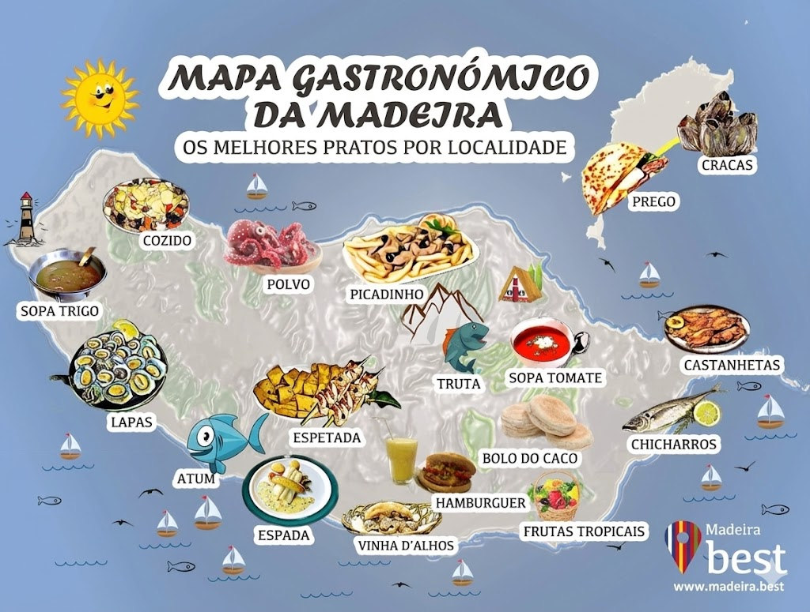
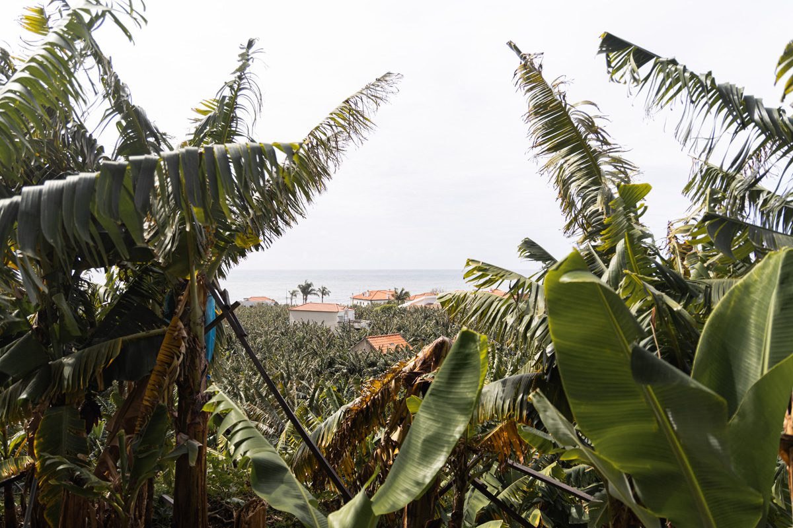

A gastronomia da Madeira é rica e variada, combinando sabores do mar e da terra, com influências da sua história e clima ameno. Descobre os pratos típicos que fazem desta ilha um destino gastronómico imperdível!
Mapa gastronómico: os melhores pratos por localidade
Espetada em Pau de Louro
O prato mais emblemático da Madeira! Cubos de carne de vaca temperada com alho, sal e louro, grelhados num espeto de pau de louro que lhe confere um sabor único e aromático.
Prato PrincipalBolo do Caco
Um pão achatado tradicional, cozido em pedra de basalto ("caco"). É servido quente com manteiga de alho derretida - uma combinação irresistível que acompanha muitos pratos madeirenses.
AcompanhamentoPeixe-Espada Preto
Um peixe de águas profundas típico da Madeira, geralmente servido frito com banana da ilha. A combinação doce-salgado é surpreendente e deliciosa!
Prato de PeixeLapas Grelhadas
Marisco típico das costas rochosas da Madeira, grelhado com manteiga de alho e limão. Uma iguaria apreciada como entrada ou petisco.
MariscoMilho Frito
Cubos de farinha de milho fritos até ficarem crocantes por fora e macios por dentro. Um acompanhamento tradicional que combina na perfeição com a espetada.
AcompanhamentoBolo de Mel
Doce tradicional natalício feito com mel de cana-de-açúcar, especiarias, nozes e frutos secos. É tão especial que tradicionalmente só se corta no dia de Reis!
Sobremesa🍹 Bebidas Típicas
Poncha
A bebida mais famosa da Madeira! Feita com aguardente de cana-de-açúcar, sumo de limão (ou laranja/maracujá) e mel. Refrescante mas traiçoeira!
Vinho Madeira
Um vinho fortificado mundialmente famoso, com séculos de tradição. Pode ser seco ou doce, e é excelente como aperitivo ou digestivo.
Coral
A cerveja local da Madeira, leve e refrescante - perfeita para acompanhar os petiscos e pratos tradicionais da ilha.
🌿 Produtos Regionais
O solo vulcânico fértil e o clima ameno permitem cultivar produtos únicos:
Plantação de bananeiras - o principal produto agrícola de exportação
Sabias que...
A Banana da Madeira é o principal produto agrícola de exportação da ilha! É mais pequena e mais doce que as bananas tropicais, devido ao clima único da Madeira.